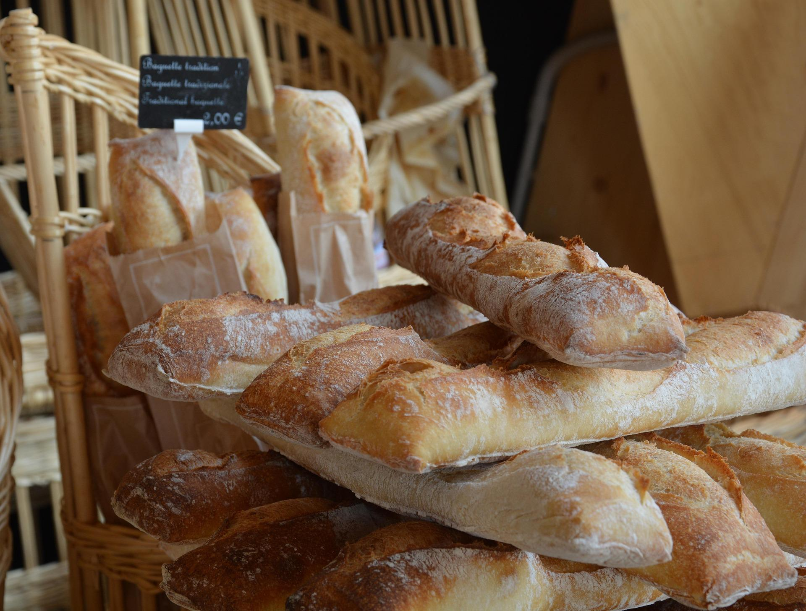

FRESH BREAD
BY IZA
BY IZA
Handcrafted sourdough, pastries & artisanal loaves, baked daily in Cape Town. Fresh, natural, and delivered with care.
Shop Now Our Story
Small batch, baked fresh every morning. Made with simple ingredients.

Slow fermented, crisp crust, tangy crumb.

Buttery, layered, baked to golden perfection.

Seeded, olive & rosemary. Fresh daily.